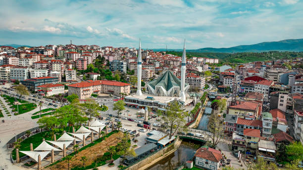
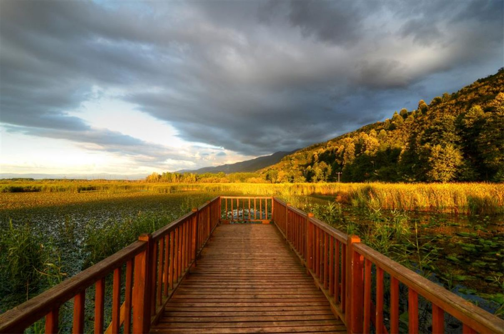
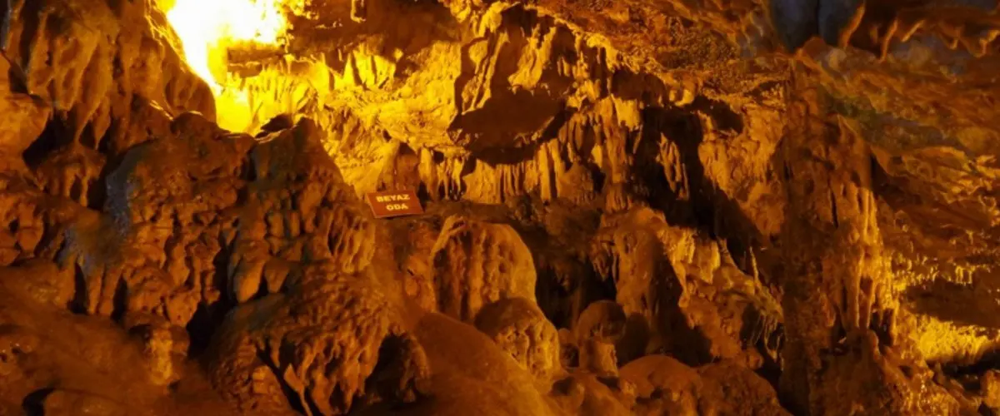

Düzce

Efteni Gölü

Prusias Ad Hypium Antik Kenti

Fakıllı Mağarası

Bati Karadeniz’in ayakta kalan tek antik kenti olan Düzce’nin tarihi, M.Ö. 1390-800 yillari arasinda hüküm süren Hitit (Eti) Medeniyeti’ne kadar uzanir. Düzce ve çevresi 15. yüzyildan beri yerlesim alanidir. Bitinyalilar devrinde Prusias (Konuralp)’de yerlesim yeri mevcuttu. Bugünkü Düzce’nin Kurulu oldugu alan bataklik haldeydi. Roma ve Bizans devrinde son kral IV. Nikomedes'in vasiyeti geregince M.Ö. 74 yilinda Roma Imparatorluguna devredilmistir. Bitinyalilar devrinde bataklik halinde bulunan Düzce Ovasi, Romalilar zamaninda islah edilerek ziraat için elverisli hale getirilmistir. Romalilardan sonra bu bölge Bizanslilarin eline geçti. Düzce’nin gelismesi Bizanslilar devrinin son zamanlarina rastlar. Orhan Gazi’nin komutanlarindan Konuralp Bey’in Bizans Tekfurlari ile 1323'te yaptigi savaslar sonucu Osmanli topraklarina katildi. Düzce’nin Konsapa adini almasi bu devrededir. O zamanki yerlesim merkezi Gümüsabadi’dir. Daha sonra ilçe merkezine Üskübü denildi. Yerlesimmerkezi de Prusias (Üskübü) bugünkü Konuralp kasabasi idi. Düzce bu dönemde, ticaret ve arazi bakimindan ilk ilçe merkezi olan Gümüsabadi’yi gölgede birakti. Bu nedenle 1871 yilinda yerlesim yeri Düzce’ye nakledildi. 1869 yilina degin Kastamonu Vilayeti Bolu Mutasarrifligi, Göynük Kasabasi’na bagli bir bucak olarak tarihte yer almistir. 1869 yilinda ise Bolu Sancagi’na bagli Kaza olmustur. Ilin genel ekonomik yapisi tarim,ticaret ve kismen de olsa sanayiye dayanmaktadir.En önemli tarim ürünü findiktir. Findigin yani sira misir, bugday ve çeltik önemli geçim kaynaklaridir.
Nüfus (2021) -> 188.928
Il topraklari, kiyi kesimi disinda ortasi çukur, çevresi daglarla kusatilmis alanlardan olusur. Kuzey kesimde Akçakoca Daglari, dogu kesimde Bolu Daglari, güneydogu ve güney kesimde de Abant Daglari’nin bati uzantilari yer alir. Düzce’nin denizden yüksekligi 150 metredir.Orta kesimdeki çukur alanda tarimsal üretim açisindan büyük önem tasiyan Düzce Ovasi yer alir. Ilin baslica akarsuyu Melen Çayi’dir.Akçakoca Daglari’ndan dogan bu akarsuyun Melen Gölü de denilen Efteni Gölü’ne kadarki bölümü Küçük Melen Çayi, bu gölle denize döküldügü Melenagzi arasindaki bölümüne de Büyük Melen Çayi adi verilir. Tarim alanlarinin sulanmasi ve bu alanlarin taskindan korunmasi amaciyla Küçük Melen Çayi üzerinde yapilan Hasanlar Baraji’nin tamamlanma tarihi 1972’dir. Hasanlar Baraj Gölü ildeki tek yapay göldür. Düzce ili, Karadeniz Bölgesi’nin kiyi kesimlerinde görülen nemli ve fazla sert olmayan iklimin etkisi altindadir. Yillik sicaklik ortalamasi 13,0oC, yillik toplam yagislarin ortalamasi 823,7kg/m2olup, ortalama nispi nem %75’dir.Düzce, dogal bitki örtüsü açisindan zengin sayilan bir ildir. Kiyi kesimi maki ve yalanci makiler, kiyi ardindaki daglar ise gürgen, kayin, kestane ve meselerden olusan ormanlarla kaplidir. Düzce Ovasi’ni kusatan daglarin alçak kesimlerinde genis yapraklilardan, yüksek kesimlerinde ise karaçam, sariçam ve köknarlardan olusan ormanlar vardir. Düzce'nin dogal bitki örtüsünde çesitlilik görülmektedir. Düzce'nin Karadeniz kiyilarinda maki ve yalanci makiler kendini gösterirken, Düzce'nin daglarina çiktikça gürgen, kayin, kestane ve meseler ile kendini orman olarak göstermektedir. Bunlarin disinda Düzce'nin alçak kesimlerinde genis yaprakli bitki örtüsüne sahipken, yüksek kesimlerinde görünen bitki örtüsü; kizilçam, sariçam ve köknarlardan olusan ormanlar mevcuttur.


